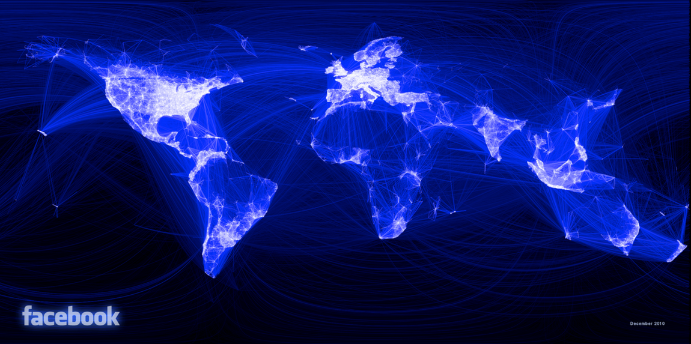
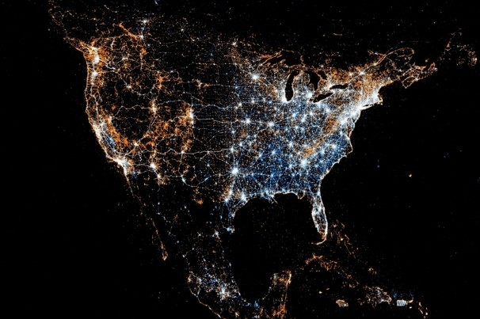
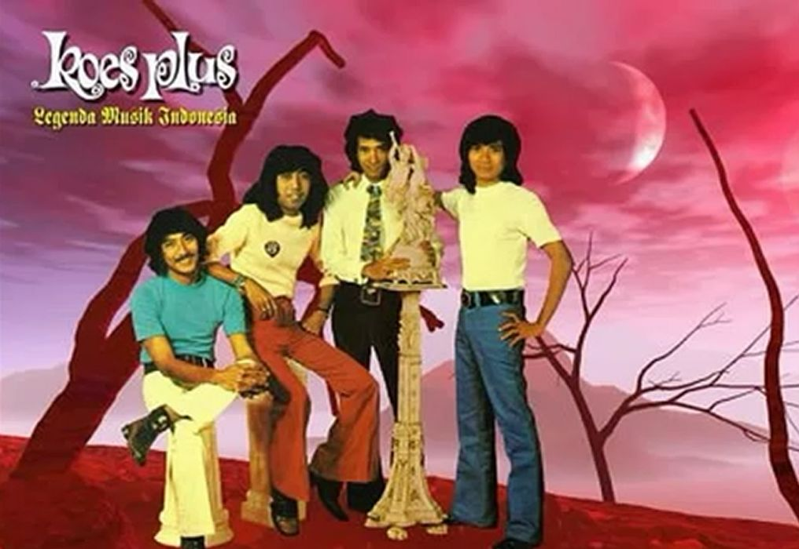

Komputasi Awan (KA)
Peran KA/CC
Jadi... Mengapa ? Apa perlunya KA?
Facebook

(Mung Chiang, Coursera)
Twitter

(Mung Chiang, Coursera)
Angka-Angka | Users & Objects
Facebook :
1.15 B
pengguna aktif
Google :
1.2+ B
queries/day dengan
27 B
items
YouTube :
2+ B
videos/day
Flickr :
6+ B
foto
Haeberlen, Ives (Univ. of Pennsylvania, 2013)
Angka-Angka | Data
Google processed
20 PB
per day (
2008
)
Rendering 'Avatar' movie required
1+ PB
of storage
eBay has
6.5+ PB
of user data
CERN's LHC will produce about
15 PB
of data per year
German Climate computing center dimensioned for
60 PB
of climate data
Google now designing for
1 EB
of storage
NSA Utah Data Center is said to have
5 ZB
(ada rumor
1 YB
)
Haeberlen, Ives (Univ. of Pennsylvania, 2013)
Angka-Angka | Computation
Facebook is thought to have more than
60,000
servers
Intel has
+/- 100,000
servers in
97
data centers
Microsoft reportedly had at least
200,000
servers (2008)
Akamai has
95,000
servers in
71
countries
Google is thought to have more than
1 million
servers, is planning for
10 million
(according to Jeff Dean)
Haeberlen, Ives (Univ. of Pennsylvania, 2013)
Jadi ...

Mengapa ? Apa perlunya KA?